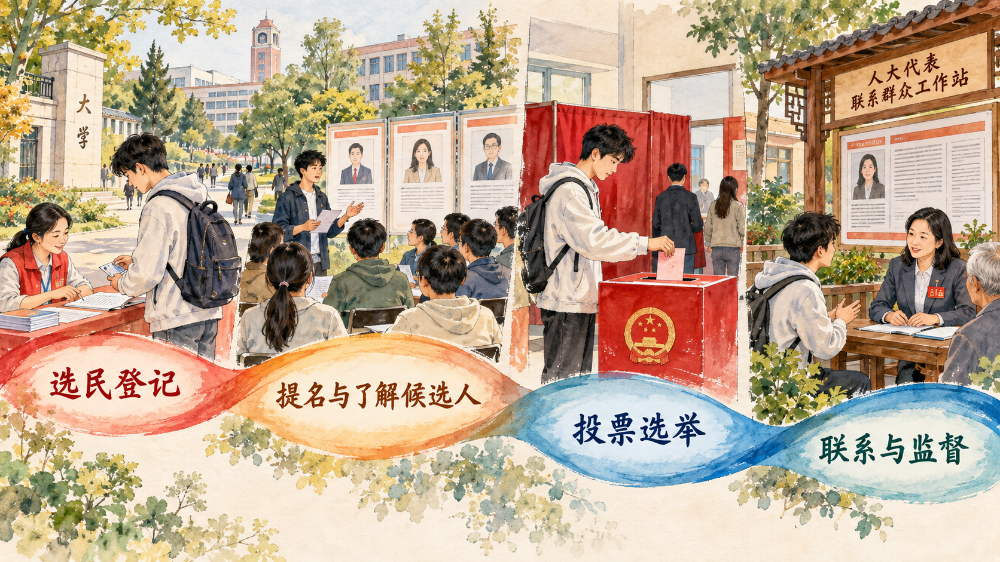

一张选票背后为什么是一整套政治制度
本节从民主的历史性和具体性出发，说明人民民主的社会主义性质、中国特色社会主义政治制度的形成基础，以及坚持中国特色社会主义政治发展道路的根本要求。理解制度自信，需要把国家性质、制度程序和人民参与联系起来，观察人民怎样依法管理国家事务、经济文化事业和社会事务。
一、人民民主是社会主义的生命
民主是全人类共同价值，也是具体的、历史的。一个国家采取什么样的民主制度和发展道路，同其社会性质、历史文化、现实国情和人民实践密切相关。中国共产党领导人民争取民族独立和人民解放，建立人民当家作主的新中国；社会主义革命和建设、改革开放和新时代的持续探索，又使人民民主的制度体系不断健全。
我国是工人阶级领导的、以工农联盟为基础的人民民主专政的社会主义国家。国家一切权力属于人民，人民通过各级人民代表大会行使国家权力，同时依照法律规定，通过多种途径和形式参与国家治理和社会治理。人民民主由此同国家性质、根本政治制度以及广泛的参与渠道连接起来。
人民民主也是中国式现代化的内在要求。现代化建设涉及发展机会、公共服务、利益协调和长期规划，需要人民表达诉求、贡献智慧、监督权力，也需要把分散意见转化为能够执行的公共方案。人民既是现代化建设的主体，也是发展成果的享有者。
案例研究｜一名中大学生怎样进入海珠区人大代表选举
2026 年 7 月，海珠区召开人大换届选举工作动员部署会，区选举委员会随后召开第一次会议；8 月，换届选举工作推进会暨第二期培训班继续部署有关工作。这些会议意味着一场覆盖全区的直接选举需要先完成组织机构、选区、选民登记、候选人产生和投票安排等准备。
对一名年满 18 岁、在中山大学广州校区南校园学习的学生来说，参与选举从确认自己属于哪个选区、是否具有选民资格、在哪里登记开始。选民名单公布后，选民还可以核对自己的登记情况。选民依法联名推荐代表候选人，经过介绍、讨论、酝酿和确定正式候选人，随后在投票日以无记名方式投票。
把这一过程放进校园生活，可以看到几个容易被忽略的细节。选民登记首先解决“由谁、在什么地方参加选举”的问题。同一名学生可能同时同户籍地、经常居住地和学校发生联系，登记程序需要确认其选举权在一个选区行使。名单公布以后，学生可以查看姓名是否遗漏、信息是否准确，并依法提出更正意见。登记由此保障每名合格选民获得参与机会，也使投票人数和选举组织建立在可核对的基础上。
候选人产生包含选民推荐、名单公布、情况介绍和讨论酝酿等环节。选民可以依法联名推荐代表候选人，选举组织需要公布初步候选人名单，介绍候选人的基本情况，并组织选民了解候选人。学生关心的宿舍条件、校园周边交通、实习就业、基层公共文化服务等问题，都可以转化为了解候选人履职能力的具体问题。投票时采用无记名方式，使选民能够按照自己的判断作出选择。
中山大学 2016 年公开的选举工作指引记录过校园组织区人大代表选举的具体方式。当时不同校区分别进入所在行政区域的选区，非广州户籍人员需要处理异地登记证明，校内还安排了候选人推荐、名单公布和投票。它提供了一份校园参与直接选举的本地历史记录。2026 年海珠区新一轮换届正在推进，正式课堂案例将以当年公开的中山大学选区材料为准，持续补充登记、候选人见面、投票和代表产生后的联系机制。
投票结束后，选票还要经过依法统计和确认，代表当选以后要同原选区选民保持联系。大学生可以通过代表联络站、调研座谈、意见建议等渠道反映问题，代表则可以把具有公共性的诉求带入视察、调研和代表建议。一次直接选举因此包含连续程序：选区连接选民与代表名额，登记确认选举权的行使地点，候选人推荐使普通选民参与人选形成，候选人介绍帮助选民作出判断，无记名投票保障自主表达，代表联系和监督又把一次投票延伸为持续履职。

讨论题
- 为什么每名选民只能在一个选区登记？这一程序同时保障了什么权利和秩序？
- 选民依法联名推荐代表候选人，为普通选民提供了怎样的参与空间？
- 如果大学生只在投票日参加，此后不再联系代表、表达意见或监督履职，全过程中的哪些环节会变弱？
资料来源：广州市人大常委会海珠区动态所列 2026 年换届选举工作材料；中山大学管理学院《中山大学广州市、区新一届人大代表选举工作指引》，2016 年 8 月 24 日；《中华人民共和国全国人民代表大会和地方各级人民代表大会选举法》；《中华人民共和国全国人民代表大会和地方各级人民代表大会代表法》。
二、中国特色社会主义政治制度行得通、有生命力、有效率
中国特色社会主义政治制度是在中国共产党带领人民进行革命、建设和改革的长期实践中形成的。人民代表大会制度是我国的根本政治制度，中国共产党领导的多党合作和政治协商制度、民族区域自治制度、基层群众自治制度是基本政治制度；在这些制度基础上，还有一系列重要政治制度共同发挥作用。
评价政治制度，需要看人民能否依法有序参与国家和社会事务，利益诉求能否畅通表达，决策能否经过民主程序，权力能否受到制约和监督，也要看制度能否维护国家统一、社会稳定并推动发展。制度优势通过具体程序、组织能力和治理成效体现出来。
三、坚定不移走中国特色社会主义政治发展道路
中国特色社会主义政治发展道路是近代以来中国人民长期奋斗的历史逻辑、理论逻辑和实践逻辑共同作用的结果。走这条道路，必须坚持党的领导、人民当家作主、依法治国有机统一。党的领导提供根本保证，人民当家作主体现社会主义民主政治的本质特征，依法治国使人民权利和国家治理在制度轨道上运行。
政治制度需要在实践中完善。推进政治体制改革，要围绕扩大人民有序政治参与、健全制度程序和提高治理效能展开，使制度保持活力。坚持政治发展道路，也要求立足本国历史和现实判断制度，持续推进制度化、规范化、程序化建设。
参考资料｜一张区人大代表选票怎样产生效力
我国县级和乡级人大代表由选民直接选举产生，县级以上各级人大代表由下一级人民代表大会选举产生。直接选举把选民同代表建立起直接法律关系，间接选举则由下一级国家权力机关选举上一级人大代表，共同构成五级人民代表大会的代表产生体系。
直接选举通常经历划分选区、选民登记、提出和确定候选人、介绍候选人、投票和确认结果等环节。选区按照便于选民参加选举活动和代表联系选民的原则划分；选民登记确认公民在一个选区依法行使选举权；差额选举使正式候选人人数多于应选代表名额；无记名投票保护选民自主表达。
代表产生以后，制度关系仍然继续。人大代表要同原选区选民或者原选举单位保持密切联系，听取和反映意见，参加视察调研，依法提出议案、建议、批评和意见，并接受监督。选票产生代表，代表把人民意见带入国家权力机关，人大依法作出决议决定并监督实施，人民再通过联系代表等渠道持续参与。
资料来源：《中华人民共和国宪法》；《中华人民共和国全国人民代表大会和地方各级人民代表大会选举法》；《中华人民共和国全国人民代表大会和地方各级人民代表大会代表法》；国务院新闻办公室《中国的民主》，2021 年 12 月。